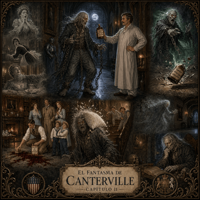

Capítulo 2
Capítulo II
Análisis
Inicio y Estructura
Inicio y Estructura:
El capítulo comienza con una descripción de situación: la tormenta continúa durante la noche y la mancha de sangre reaparece en la biblioteca. No empieza con una acción brusca, sino con un hecho misterioso que instala intriga. Luego el relato avanza hacia una escena de acción: el Sr. Otis escucha ruidos, abre la puerta y se encuentra con el fantasma. El orden es principalmente cronológico, marcado por expresiones como “a la mañana siguiente”, “esa noche”, “cuando todos estaban en sus habitaciones”, “luego” y “cuando llegó a su habitación secreta”. Hay un breve salto hacia el pasado cuando el fantasma recuerda sus antiguos triunfos y a las personas que logró aterrorizar.
Voz narrativa
Voz Narrativa:
El fragmento está narrado por un narrador omnisciente externo. No participa de los hechos, pero conoce lo que ocurre en distintos espacios de la casa y también accede al mundo interior del fantasma: “estaba muy enojado”, “se sentía infeliz”, “pensó”. Su ángulo de visión es amplio: observa a la familia Otis, describe al fantasma y luego entra en sus recuerdos. Esta elección genera un efecto humorístico, porque el narrador permite ver el contraste entre la solemnidad del fantasma y la reacción práctica, moderna y poco temerosa de los estadounidenses.
Construcción del Personaje
Los personajes se construyen a través de lo que hacen, dicen, piensan y del modo en que reaccionan. El Sr. Otis aparece como un hombre práctico, racional y moderno: ante la aparición sobrenatural, no se asusta, sino que ofrece aceite para las cadenas. Washington también representa esa actitud lógica al intentar quitar la mancha con el limpiador Pinkerton. El fantasma de Canterville es el personaje más desarrollado: se lo presenta visualmente como una figura terrorífica —ojos rojos, pelo gris, ropa vieja, cadenas—, pero sus pensamientos revelan orgullo herido, nostalgia y deseo de venganza. Los niños, aunque aparecen brevemente, cumplen un rol importante porque ridiculizan al fantasma al arrojarle una almohada. El comportamiento de todos hace avanzar la trama: la indiferencia de la familia provoca la frustración del fantasma y prepara su decisión de vengarse.
Climas y Percepciones Sensoriales
Climas y Percepciones Sensoriales:
La atmósfera combina clima gótico y tono humorístico. Hay recursos visuales como “la mancha de sangre”, “la luz de la luna”, “ojos rojos como el fuego”, “extraña luz verde” y “siluetas infantiles”. También predominan percepciones auditivas: “ruido extraño y metálico”, “sonido de unos pasos”, “cadenas ruidosas”, “grito largo y terrible”. En lo táctil aparece la sugerencia de frialdad y antigüedad en “dedos fríos” y “manos esqueléticas”. No hay percepciones gustativas ni olfativas destacadas. El lector percibe físicamente el entorno como una casa nocturna, oscura y sonora, pero el terror se quiebra por la reacción absurda y doméstica de la familia.
Recursos de Cohesión
Recursos de Cohesión:
El texto mantiene la unidad mediante referencias pronominales y sustituciones. Por ejemplo, “lo” y “le” retoman al fantasma o al Sr. Otis según el contexto; “esto” resume la situación de humillación sufrida por el fantasma; “todos esos tiempos felices” recupera sus recuerdos anteriores. También aparecen conectores temporales que ordenan la secuencia: “a la mañana siguiente”, “la noche anterior”, “esa noche”, “entonces”, “luego”, “cuando”, “durante cien años”, “antes de eso”, “al fin de cuentas”. Hay conectores lógicos como “pero”, “por eso” y “así que”, que establecen oposición, causa y consecuencia. La cohesión léxica se apoya en campos semánticos vinculados con el terror: “fantasma”, “sangre”, “biblioteca”, “noche”, “ruido”, “luz de la luna”, “cadenas”, “grito”, “pared”, “habitación secreta”, “vengarse”.
Gramática y Verbos del Decir
Gramática y Verbos del Decir:
Predomina el uso del Pretérito Perfecto Simple para las acciones principales: “continuó”, “bajó”, “apareció”, “despertó”, “se levantó”, “abrió”, “dejó”, “tiró”, “desapareció”, “decidió”. Este tiempo hace avanzar la narración. El Pretérito Imperfecto se usa para descripciones, estados y marcos: “estaba”, “era”, “tenía”, “se movía”, “continuaba”, “se escuchaba”. También aparece el Pretérito Pluscuamperfecto para hechos anteriores a otros hechos pasados: “había cerrado”, “había sido tratado”.
Los verbos del decir más relevantes son dijo, sugirió, se dijo a sí mismo y pensó. “Dijo” introduce diálogo directo; “sugirió” caracteriza la actitud amable, irónica y tranquila del Sr. Otis; “pensó” y “se dijo a sí mismo” permiten acceder al monólogo interior del fantasma y vuelven más verosímil su enojo.
Puntuación y Normativa
Puntuación y Normativa:
El texto usa correctamente la raya de diálogo para introducir las intervenciones de los personajes: “—Eso es extraño…”, “—Mi querido hombre…”. Las intervenciones están integradas con verbos declarativos, como “dijo Washington” y “sugirió el Sr. Otis”. También se utilizan comillas para señalar el pensamiento directo del fantasma: “Durante cien años —se dijo a sí mismo—…”. Los párrafos están organizados como unidades de significación: primero la mancha de sangre, luego la aparición nocturna, después la reacción del fantasma y finalmente su decisión de venganza. La puntuación contribuye a separar escenas, marcar pausas y alternar narración, diálogo y pensamiento.
Campos semánticos
Sobrenatural y el Terror
1. Campo semántico del terror sobrenatural
Este campo sostiene la pertenencia del fragmento al relato fantástico o gótico.
- Ser sobrenatural: fantasma, fantasma de Canterville.
- Apariciones: apareció, volvió a aparecer, allí había un anciano, desapareció a través de la pared.
- Miedo y amenaza: grito largo y terrible, terror, miedo, se arrepentirán, vengarse.
- Cuerpo espectral: ojos rojos como el fuego, pelo gris, manos esqueléticas, dedos fríos, cuerpo, luz verde.
- Elementos macabros: mancha de sangre, sangre, cadenas, habitación secreta.
Función en el texto: crea una atmósfera de miedo tradicional, aunque luego ese miedo se debilita por el humor.
Casa embrujada
2. Campo semántico de la casa embrujada
Organiza el espacio donde ocurre la acción.
- Espacios interiores: biblioteca, suelo, pasillo, dormitorio, habitación, habitación secreta, escaleras.
- Aberturas y límites: ventanas, puerta, pared.
- Muebles y objetos del hogar: cama, armario, mesita, suelo.
- Recorridos dentro de la casa: bajó a desayunar, se movía por el pasillo, se acercaba a la puerta, llegó a las escaleras, volvió a su habitación.
Función en el texto: permite ubicar al lector dentro de un espacio cerrado, nocturno y misterioso. La casa funciona como escenario central del conflicto entre la familia y el fantasma.
noche y el tiempo
3. Campo semántico de la noche y el tiempo
Ordena cronológicamente los hechos y refuerza el clima de misterio.
- Momentos del día: toda la noche, a la mañana siguiente, por la mañana, esa noche, la noche anterior, al amanecer.
- Duración: durante cien años, durante un segundo o dos, hasta el amanecer.
- Anterioridad y recuerdo: no hace mucho tiempo, antes de eso, recuerdo también.
- Secuencia narrativa: luego, entonces, cuando, por eso.
Función en el texto: marca el avance de la narración y opone dos momentos: la mañana racional, donde se observa la mancha, y la noche sobrenatural, donde aparece el fantasma.

Escritura
Descripción de la casa embrujada
2. Descripción sensorial de la casa embrujada
Propósito:
Ampliar las descripciones usando percepciones visuales, auditivas, táctiles, olfativas y gustativas. El material sobre descripciones propone trabajar con vocabulario preciso para que el lector perciba físicamente el entorno.
Consigna para estudiantes:
Elegí un espacio de la casa: la biblioteca, el pasillo, la escalera o la habitación secreta del fantasma. Escribí una descripción que prepare la aparición de algo extraño.
Condiciones de escritura:
La descripción debe incluir:
- 3 imágenes visuales;
- 2 sonidos;
- 1 percepción táctil;
- 1 olor;
- al menos 5 adjetivos precisos;
- una atmósfera definida: terrorífica, misteriosa, cómica o melancólica.
Ejemplo de inicio posible:
“El pasillo parecía más largo que de costumbre. La luz de la luna caía sobre las paredes…”
Foco de enseñanza:
Adjetivación, vocabulario sensorial, campos semánticos, construcción de clima narrativo y uso del Pretérito Imperfecto para describir.
Una discusión imposible
3. Diálogo directo: una discusión imposible
Propósito:
Practicar la raya de diálogo, los verbos del decir y la caracterización de personajes a través de la voz. El material sobre diálogo destaca que este recurso permite conocer a los personajes directamente por sus palabras y vuelve más verosímil la escena.
Consigna para estudiantes:
Escribí un diálogo entre el fantasma y el Sr. Otis después de que el fantasma recibe la botella de aceite. El fantasma quiere asustarlo; el Sr. Otis quiere resolver el problema de manera práctica.
Condiciones de escritura:
El diálogo debe tener:
- al menos 8 intervenciones;
- raya de diálogo en cada intervención;
- 4 verbos dicendi diferentes;
- una acotación sobre el gesto, tono o movimiento de cada personaje;
- un cierre humorístico o misterioso.
Banco de verbos dicendi:
dijo, preguntó, respondió, gritó, murmuró, sugirió, protestó, exclamó, advirtió, confesó, susurró, reclamó.
Foco de enseñanza:
Diálogo directo, puntuación, verbos declarativos, caracterización de personajes y tono.
Revisión:
Marcar con color las rayas de diálogo. Luego reemplazar dos usos de “dijo” por verbos más precisos.
Ampliación de una escena
4. Ampliación de una escena breve
Propósito:
Desarrollar la escritura por ampliación, agregando detalles narrativos sin perder coherencia.
Consigna para estudiantes:
Tomá esta oración del fragmento:
“El fantasma se alejó apresuradamente.”
Convertí esa oración en un párrafo narrativo completo de 10 a 12 renglones.
Condiciones de escritura:
El párrafo debe incluir:
- qué sintió el fantasma;
- cómo se movió;
- qué sonidos produjo;
- qué vio al atravesar la casa;
- qué pensó sobre la familia Otis;
- un conector temporal;
- un conector de causa o consecuencia.
Foco de enseñanza:
Ampliación, progresión de acciones, conectores temporales y lógicos, verbos de acción y verbos de pensamiento.
Revisión:
Identificar si el párrafo responde a estas preguntas: ¿qué pasó?, ¿dónde pasó?, ¿cómo pasó?, ¿por qué pasó?, ¿qué consecuencia tuvo?
La venganza del fantasma
5. Nuevo episodio: la venganza del fantasma
Propósito:
Producir una escena narrativa completa con planificación, escritura y revisión. Los contenidos curriculares del eje Producción de textos incluyen narraciones, diálogos, descripciones, revisión colaborativa, uso de conectores, pronombres, vocabulario específico y tiempos del pasado.
Consigna para estudiantes:
El fantasma decidió vengarse. Escribí un nuevo episodio en el que intenta asustar a la familia Otis, pero algo sale mal.
Antes de escribir, completar este plan:
Lugar:
¿Dónde ocurre la escena?
Momento:
¿De noche, al amanecer, durante una tormenta?
Personajes:
¿Quiénes aparecen?
Plan del fantasma:
¿Qué piensa hacer para asustarlos?
Problema inesperado:
¿Qué sale mal?
Final:
¿El episodio termina con miedo, humor o sorpresa?
Condiciones de escritura:
El texto debe tener:
- un inicio descriptivo o de acción;
- al menos un diálogo breve;
- una descripción sensorial;
- conectores temporales;
- un campo semántico dominante;
- uso de Pretérito Perfecto Simple para las acciones;
- uso de Pretérito Imperfecto para descripciones.
Foco de enseñanza:
Producción narrativa, estructura del episodio, cohesión, campos semánticos, diálogo, descripción y revisión de borradores.
Revisión final:
Completar esta lista de control:
| Aspecto a revisar | Sí | A mejorar |
|---|---|---|
| El episodio tiene inicio, desarrollo y cierre. | ||
| Se entiende quién narra. | ||
| Hay conectores temporales. | ||
| Hay al menos un diálogo con raya. | ||
| Las descripciones usan vocabulario sensorial. | ||
| No se repiten innecesariamente los nombres de los personajes. | ||
| Los tiempos verbales se mantienen en pasado. | ||
| La puntuación ayuda a comprender el texto. |